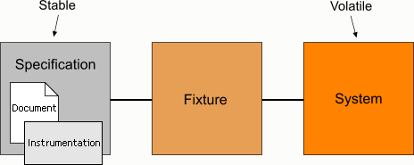
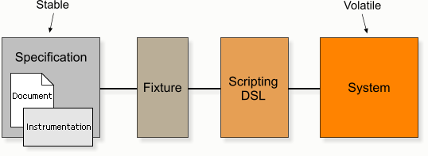

Technique
Write specifications, not scripts
Hide all scripting activity in the Java fixture code.
Scripts over-specify
Test scripts are a list of instructions to be followed. For example:
Clear database
Load database from "sample-data.sql"
Start webserver
Open URL: http://localhost:8080/myapp
Enter username: admin
Enter password: admin1
Click the "Login" button
Click the "User Administration" link
Click the "Create User" button:
Enter name: John Smith
Enter username: john
Enter password: john99
Click the "OK" button
Click the "Logout" link
Enter username: john
Enter password: john99
Click the "Login" button
Check page contains text: Hello John!
Concealed inside the script is a behaviour that the test is trying to demonstrate. But because the requirement is not explicit, it's hard to know what it is (e.g. "Can we change this link to a button, or is the link part of the requirement?").
Scripts also tend to suffer badly from duplication. If we introduce an extra step into the authentication process then all the scripts that mention logging-in will need modification. This is exactly the kind of duplication that programming languages are designed to address and why plain English is not a good language for scripting.
Specifications give you freedom
Specifications tell you the requirements explicitly. They are written at a higher level of abstraction to test scripts. For example:
When John logs in, a greeting "Hello John!" is displayed.
This can be implemented in multiple ways. All of the details about how to test the requirement are hidden inside the fixture code where they can be refactored as the system evolves.
For another example see: Scripting Makeover
Specifications should be stable
The specifications themselves should rarely change. Even on agile projects, though new behaviour is added frequently, existing behaviour is normally maintained from iteration to iteration.
Decouple using the fixture as a go-between
Let the fixture code act as a buffer so that the specifications stay very stable. Anything implementation-specific should be hidden in the fixture code. You should find that the majority of specifications are written once and never changed.
Instrumentation should not change either
The job of the instrumentation is to translate the examples in the specification into method calls into the fixture. The instrumentation should be very simple and should not show any knowledge of how the behaviour is actually implemented in the system. Once written, the public interface of the fixture should not change; the implementation of its methods may change though.
Only reveal data the specification actually needs
In general, it's better not to return domain objects directly from fixture methods, but return strings or small objects containing just the values needed for the examples in the specification. The interfaces of domain objects may change and we want to avoid having to make changes to the instrumentation.
For example, don't reference a deep property of a domain object from the instrumentation:
order.phoneLine.phoneNumberorder.phoneLine.location.postcode
But, instead create a new inner class in the fixture that has the exact properties needed, and populate it from the domain object. This decouples the specifications from the domain model and gives you the flexibility to improve the model.
phoneNumberpostcode
Evolve a domain-specific language
As you write the fixture code, and refactor it to remove duplication, you'll find you gradually build up a scripting API – a domain-specific language (DSL) – that lets you manipulate the system under test. Eventually, the fixture code will become very stable too.
Isolate behaviours
Each active specification should have a narrow focus and cover a single behaviour as independently as possible from other behaviours. For example, one specification might describe how text searches are case-insensitive, another will describe how date searches work, and another will describe how search results are to be presented (what data is displayed). The idea is to keep each specification very simple and to avoid overlaps, so that we can change the specification about the way search results are presented without having to make changes to the other specifications.
If you want to test a combination of behaviours, write a separate specification of the behaviour for the combination. But always write the specifications for the individual behaviours first. When you combine behaviours there is a penalty in terms of complexity – of both the specification and the fixture code to support it.
Think "Given-When-Then"
This is an excellent way of structuring the concrete examples in the specifications, and getting into the mindset of specifying instead of scripting. I believe it was Dan North and Chris Matts who came up with the template:
Given (some context)
When (something happens)
then (some behaviour)
Example:
Given a user called John;
When John logs in,
then a greeting is displayed saying "Hello John!".
Once you've written or thought about your behaviour using the Given-When-Then template, you can reword the sentence to make it less clunky. For example, in this case we can deduce that John is a user from the phrase "John logs in", so we can drop the "Given" part and write something more readable like this:
When John logs in, a greeting "Hello John!" is displayed.
Common Smells
Existing specifications are often changed
You're tied to an implementation
If you find you're having to change the contents of specifications / instrumentation, on a regular basis, this is a strong indicator that the specifications are too closely coupled to the implementation.
So, pretend there are multiple implementations
The solution is to describe the underlying behaviour in a more abstract way. It might help to imagine that there are several different implementations - a web application, a Swing application, and a command-line executable, for example. Only describe behaviour that is required so that you leave as many options open as possible for alternative implementations.
Lots of "execute" commands
You're writing a script
If you have lots of "execute" commands you are probably writing a script instead of a specification.
So, hide the scripting in the fixture
Avoid describing the steps of how to test the behaviour and simply state the context (as a sentence), and the behaviour you expect to see. Don't explain how to get into that context, don't explain how to perform the operation and don't explain how to extract the results. All of these things are implementation-specific and should be hidden in the fixture code.
Complicated instrumentation
You're testing too much in one go
As a rule of thumb, well-written fixtures should have no more than three public methods and no method should have more than one or two parameters. Complicated instrumentation is usually a sign of trying to test too many things at once.
So, decompose the behaviour
Focus on one tiny behaviour at a time. Break the behaviour into smaller and smaller pieces until you cannot break it down any further. Then write separate specifications for each piece.
Complicated fixture code
Your fixture code is verbose and hard to follow
All the scripting should be done in the fixture code, but this can make the code seem complicated.
So, create classes to help with the scripting
Begin to create objects to help with the scripting activity - push the implementation details into them. Eventually you'll create a little domain specific language (DSL).
Examples all have the same structure
Your examples are too generic
If the examples in your specifications look very similar (i.e. they have the same kind of context set-up, the same kind of checks etc.) this is a strong sign that the examples are too generic.
So, focus the examples more carefully
The examples should demonstrate the particular behaviour you are describing and should not include any irrelevant details. Push everything you can into the fixture code.
Given the following orders:
Order ID Status Requester Date Service Level 1 Active john.smith 13-Oct-2007 High
When order 1 is cancelled,
Then the orders become:
Order ID Status Requester Date Service Level 1 Cancelled john.smith 13-Oct-2007 High
The layout above is "one size fits all". It contains lots of context that is not relevant to the behaviour we want to show.
Focusing the examples improves their clarity and reduces duplication:
When an Active order is cancelled, its status is displayed as Cancelled.